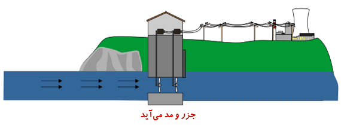

جزر و مد
پدیده جزر و مد زاییده نیروی گرانش کره ماه است . از آنجا که ماه یک جسم نسبتا بزرگ در فضا است که بسیار به زمین نزدیک است ، گرانش آن در واقع آب زمین را به سمت خود می کشد . هر جا که ماه وجود دارد و همانطور که ماه به دور زمین می چرخد یک برآمدگی به وجود می آید که تا زمانی که ماه در فراز ناحیه قرار دارد این برامدگی وجود خواهد داشت . انرژی کشندی یا انرژی جزر و مد شکلی از انرژی آبی است که تبدیل نیروی جزر و مد یک منبع تجدید پذیر است. گرچه هنوز استفاده از انرژی جزر و مد فراگیر نشده اما میتواند یکی از منابع تولید برق آینده باشد . وقوع جزر و مد بهتر از انرژی باد و انرژی خورشیدی قابل پیش بینی است . در میان انرژی های تجدید پذیر ، انرژی جزر و مد همیشه با مشکل هزینه بالا و محدودیت در مکان های با کشند شدید یا سرعت بالای آب روبرو بوده است. سدهای جزر و مدی از انرژی پتانسیل موجود در اختلاف ارتفاع بین کشند بالا و پایین استفاده میکنند. هنگامی که از سد جزر و مدی برای تولید برق استفاده میشود، انرژی پتانسیل یک کشند با قرار دادن راهبردی سدهایی ویژه ذخیره میشود. هنگامی که سطح دریا افزایش مییابد و کشند شروع میشود افزایش موقتی انرژی جزر و مدی به یک حوض بزرگ در پشت سد هدایت میشود و مقدار زیادی انرژی پتانسیل ذخیره میشود. با عقبنشینی کشند انرژی این آب آزاد شده و با حرکت توربینهای بزرگی انرژی آن به انرژی مکانیکی تبدیل شده و به واسطه ژنراتورهایی تولید برق انجام میشود. این سدها در طول ساحل در تمام طول دهانه رودخانه یا خلیج امتداد دارند
